An Open-Source Lexicographic Database for Arabic
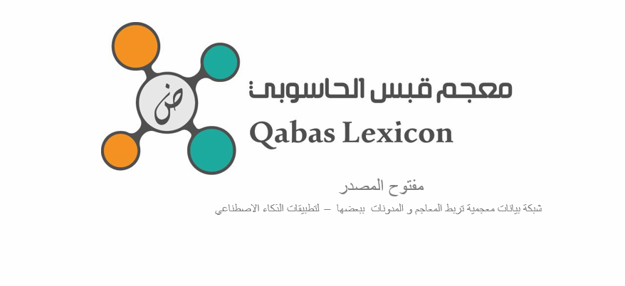
Birzeit University’s SinaLab for Computational Linguistics and Artificial Intelligence has officially launched Qabas, an open-source lexicographic database for Arabic, designed specifically for Natural Language Processing (NLP) applications. Read more →
Corpora for Six Arabic Dialects Released
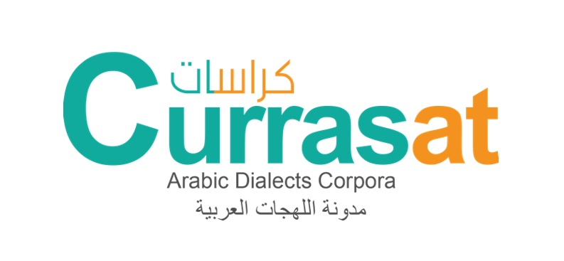
Morphologically-annotated corpora (1.3 million words) for Palestinian, Lebanese, Iraqi, Libyan, Sudanese, and Yemeni dialects are available through the Currasat portal, to enable AI to understand texts written in dialectal Arabic. Birzeit Univerity conducted this research in cooperation with AUB and UN. Read more →
In the media:
MIT Technology Review Arabia names Mustafa Jarrar one of the top Arab AI experts

Mustafa Jarrar, a professor of computer science at Birzeit University, has been named one of the top 30 Arab experts in artificial intelligence in the first edition of the “Leading Arab Experts in AI” listing published by MIT Technology Review Arabia. Read more →
Prof. Jarrar wins the Shoman Arab Researchers Award

Prof. Mustafa Jarrar has won the 2019 Abdul Hameed Shoman Arab Researchers Award in Technology for his distinguished research on Arabic computational linguistics, including his work on a lexicographic search engine, Arabic Ontology, annotated corpora, and NLP tools. Read more →
In the media:
keynote at ARDD: The Arabic Lexicographic Database and Ontology
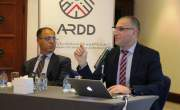
Keynote by Prof. Jarrar presenting eight years of research to enrich Arabic content on the Internet through a lexicographic search engine and the Arabic ontology - to enable NLP applications to better understand Arabic semantics. The keynote was organized by the ARDD organization, and was attended by about 70 scientists in Amman. Read more →
مقابلة رؤيا
Gallery:
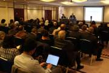
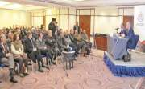
An Online Arabic Dictionary Makes Its Debut
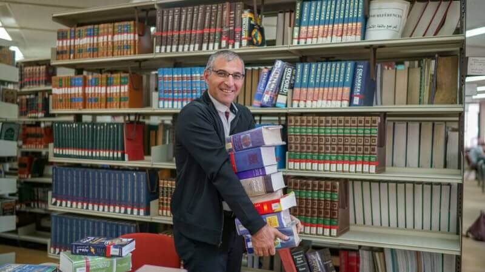
A professor at Birzeit University has built an online tool that is both a comprehensive dictionary of Arabic and a system that will enable the creation of new Arabic-language software. Prof. Mustafa Jarrar has worked for eight years to create this new tool, not only as a searchable lexicon but also as a logical system—an ontology—that recognizes the unique characteristics of the Arabic language. Read more →
An Arabic Greeting to Birzeit University
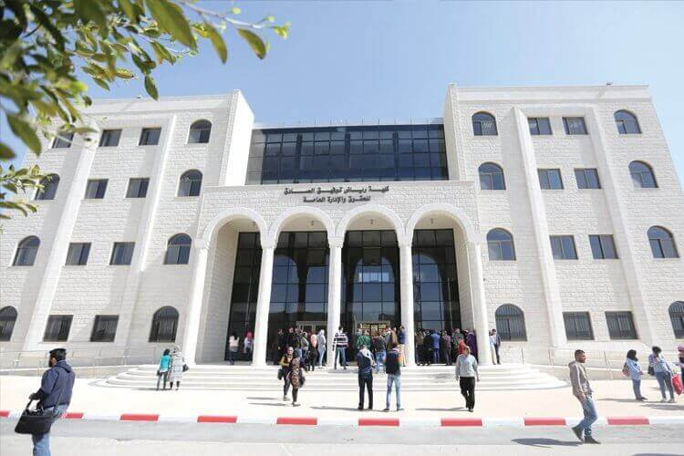
An article by Abu baker Saadallah, an Algerian Scientist, describing the pioneering role of Birzeit
University in the region since 1924, and focusing on the Arabic Ontology and the digitization of the
Arabic lexicons.
ومهما يكن من أمر، فاللغة العربية لن تتوقف مسيرتها نحو الأفضل ما دام في البلاد العربية نساء من أمثال نبيهة
ناصر، ورجال من أمثال مصطفى جرار، ومؤسسات كجامعة بيرزيت من وراء القصد. فتحية عربية لهم جميعا… بمناسبة
اليوم العالمي للغة العربية!
Read more →
Birzeit announces linguistic search engine and the Arabic Ontology
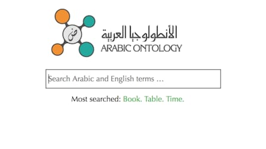
A linguistic search engine with 150 lexicons and a linguistic ontology for Arabic was launched on September 25, 2018. The ceremony was attended by the University President, Deputy Undersecretary of the Ministry of Education, President of the Palestine Academy for Science and Technology, Secretary General of the National Commission for Education, Culture and Science, and UN-ESCWA’s Chief of Innovation. Read more →
In the media:
حفل اطلاق محرك البحث
كلمة د. مصطفى جرار في حفل اطلاق محرك البحث
التعريف بمحرك البحث والأنطولجيا العربية
An infographic about the search engine
فيديو رسومي حول محرك بحث معجمي
تقرير قناة العربية حول محرك البحث المعجمي
مقابلة فضائية القدس التعليمية مع د. مصطفى جرار حول محرك البحث
تقرير تلفزيون فلسطين حول محرك البحث
هذا الصباح - تلفزيون فلسطين
مقابلة راديو 24 FM مع د.مصطفى جرار حول محرك البحث
مقابلة راديو حياة حول محرك البحث
مقابلة راديو بيت لحم 2000 مع د. مصطفى جرار حول محرك البحث
Gallery:
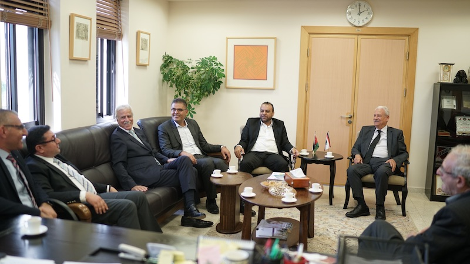
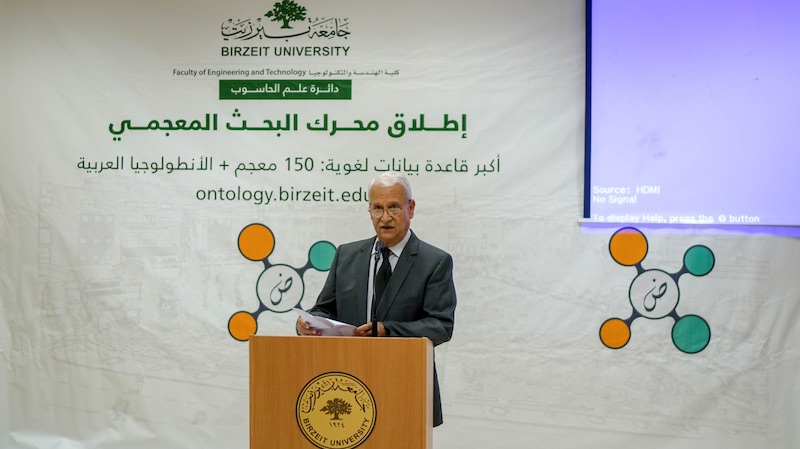
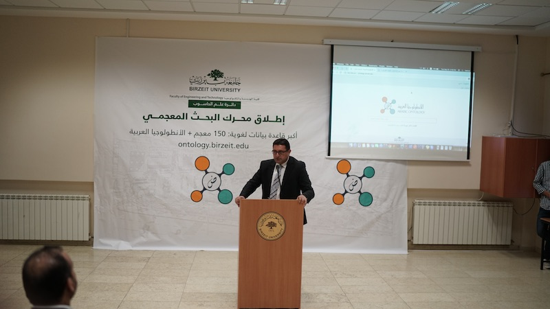
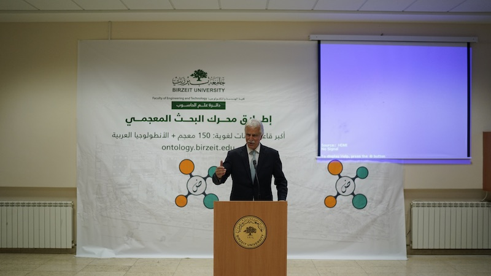
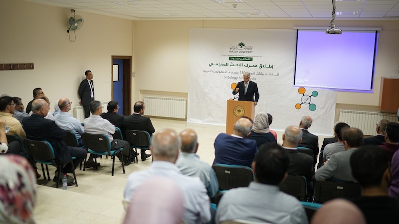
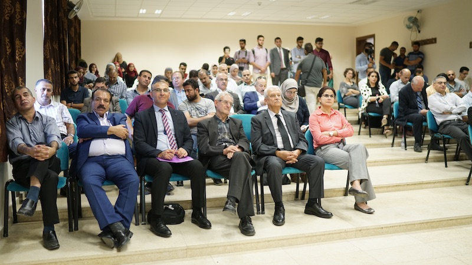
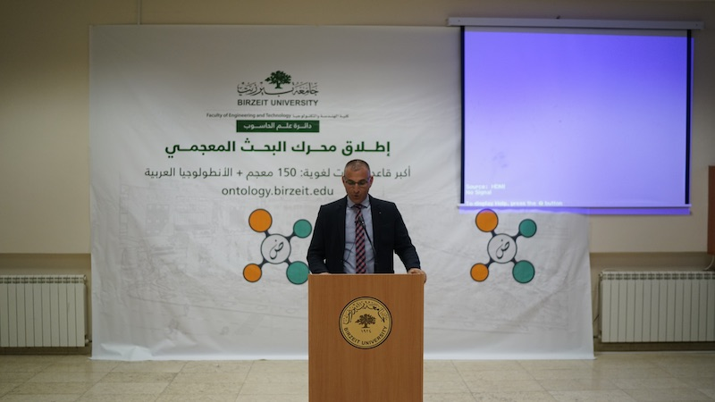
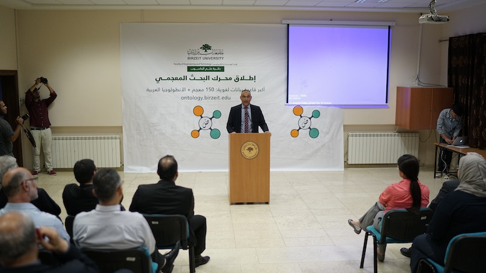
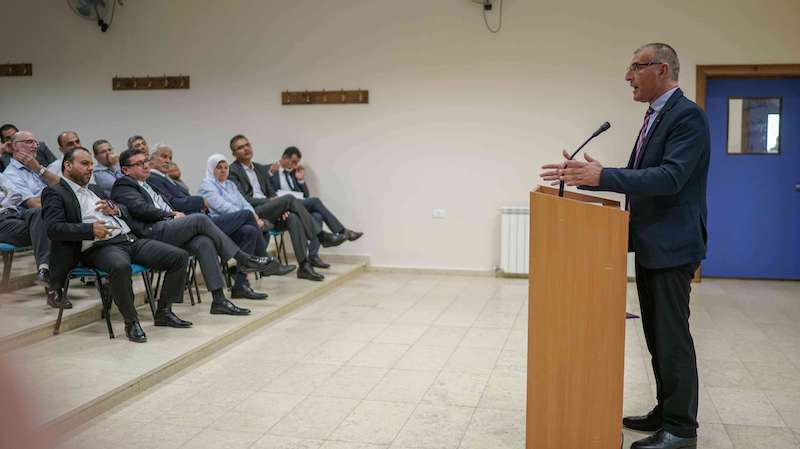
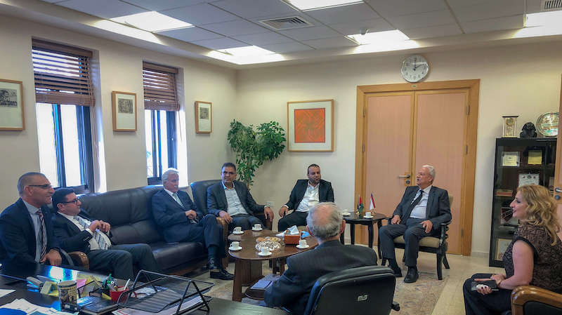
MoU with ALECSO to digitize 50 dictionaries

Birzeit University and the Arab League Educational, Cultural and Scientific Organization (ALESCO) signed a memorandum of understanding (MoU) to digitize 50 new dictionaries and to establish a linguistic observatory, in addition to cooperation on topics related to computational linguistics and language engineering. Read more →
In the media:
Gallery:
Launching the Palestinian Dialect Corpus (Curras)
An online corpus for the Palestinian dialect (called Curras) was launched on January 16, 2015 by the Computer Science Department at Birzeit University. It contains about (56,000 words) of palestinian dialect that were collected from several resources. Each word was manually annotated with 16 features. Read more →
In the media:
Gallery:
Interview about digitization and engineering of dictionaries
An interview with Dr Mustafa Jarrar hosted at the Palestine Today TV satellite channel. During which, Dr Jarrar explained the process of digitization and integration of Arabic dictionaries. He also answered questions about the Arabic Ontology, and Google Research Award that he received for fostering R&D activities related to publishing a large-scale lexicon database for Arabic. Watch on youtube →
TV Interviews:
Radio Interviews:
MoU with RedCrow to Cooperate in Computational Linguistics
The Computer Science Department at Birzeit University and RedCrow Intelligence signed an agreement to build smart security-altering systems. The agreement seeks to bridge the gap between the academia and the industry by creating a platform for the exchange of scientific and technical expertise between both parties. Read more →
In the media:
Gallery:
Researcher wins Google Research Award
Birzeit University computer science professor Mustafa Jarrar has won Google’s Faculty Research Award in the field of natural language processing. Jarrar received a grant of $50,000 to help further develop and support his research and enable him to launch an online portal comprised of a large number of Arabic lexicons Read more →
Radio Interviews:
Deploying a Multilingual Audio Guide in Bethlehem
Birzeit University, with the Centre for Cultural Heritage Preservation (CCHP) and University of Trento from Italy through its spin-off company OKKAM s.r.l, have deployed an innovative and pioneering electronic tourist guide for heritage sites in Bethlehem, using QR technologies. The initiative is part of the EU FP7 funded SIERA project. Read more →